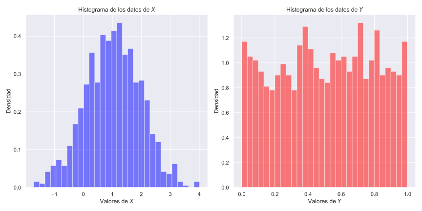
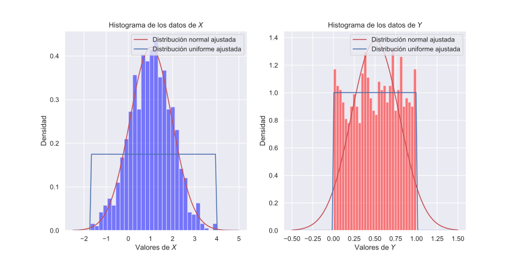

Modelos de probabilidad de los datos
Una parte central del proyecto es modelar estadísticamente los datos con distribuciones de probabilidad.
En el PyX número 5 (Py5) hay una discusión sobre modelado de datos con SciPy y Fitter.
En general, con el módulo stats del paquete SciPy es posible encontrar los parámetros de mejor ajuste para una distribución particular utilizando el método fit() de las clases de variables aleatorias. Por ejemplo, para una distribución normal:
from scipy import stats
params = stats.norm.fit(data)
print(params)
donde data es un conjunto de datos univariados. Nótese, sin embargo, que no hay ninguna garantía de que la distribución normal sea el mejor ajuste para los datos provistos, entonces es necesario hacer pruebas de bondad de ajuste para comparar y elegir la mejor distribución. El paquete Fitter ayuda en este trabajo.
Por ejemplo, si tenemos los siguientes dos conjuntos de datos de las variables aleatorias \(X\) y \(Y\), respectivamente:

Una buena intuición es asumir que la variable aleatoria \(X\) tiene una distribución normal (simétrica, concentrada alrededor de un valor central y disminuyendo la densidad al alejarse) y que la variable aleatoria \(Y\) tiene una distribución uniforme (densidad aproximadamente equiprobable en una región).
Podemos encontrar los parámetros de mejor ajuste para las distribuciones normal y uniforme en ambos casos que, graficados sobre el histograma son:

Aquí es posible confirmar la intuición al observar el ajuste de la función de densidad de probabilidad con el histograma.
Sin embargo, existen en SciPy Stats más de 80 distribuciones, entonces, ¿cuál es la verdadera distribución que mejor describe los datos? La mera observación no es suficiente. A menudo es necesario hacer pruebas de bondad de ajuste.
En este sentido Fitter es un paquete auxiliar ya que, según su documentación:
Ahora, sin ningún conocimiento sobre la distribución o sus parámetros, ¿cuál es la distribución que mejor se ajusta a los datos? SciPy tiene 80 distribuciones y la clase Fitter las examinará todas, llamará a la función de ajuste, ignorando aquellas que fallen o se queden ejecutándose indefinidamente, y finalmente dará un resumen de las mejores distribuciones en el sentido de la suma de los errores cuadrados. Lo mejor es mostrar un ejemplo:
from fitter import Fitter
f = Fitter(data)
f.fit()
f.summary()
Proceso demandante de recursos computacionales
f.fit() puede tardar muchos minutos si Fitter va a probar todas las distribuciones de SciPy Stats. Es posible indicar específicamente cuáles distribuciones deben ser evaluadas, por ejemplo:
f = Fitter(data, distributions=["norm", "expon", "rayleigh", "uniform"])
o cualquier otro subconjunto de distribuciones, indicados como una lista con los nombres de las clases de SciPy Stats (disponibles con from fitter import get_distributions; get_distributions()).